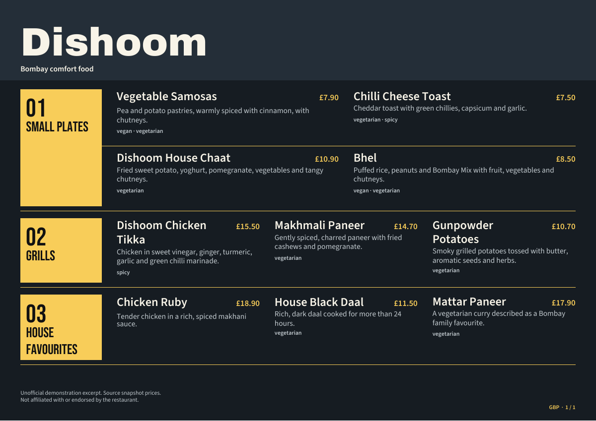
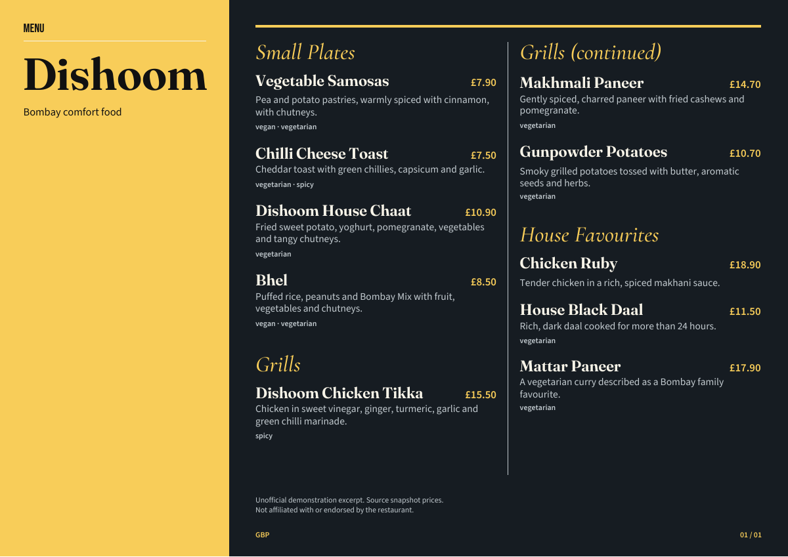
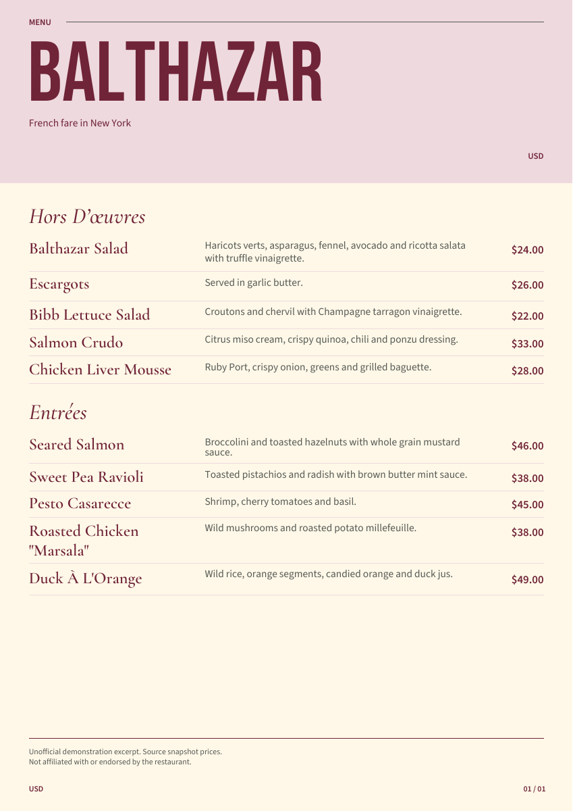
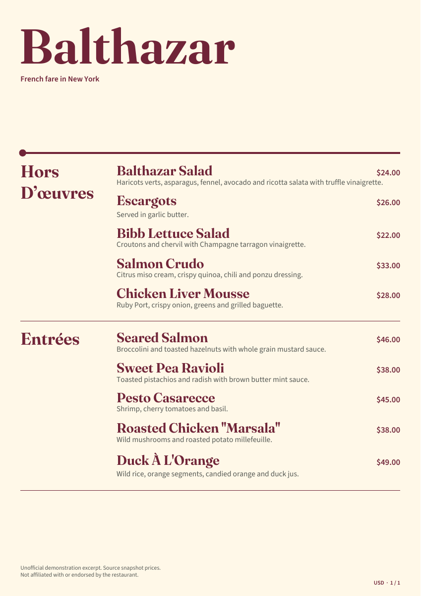
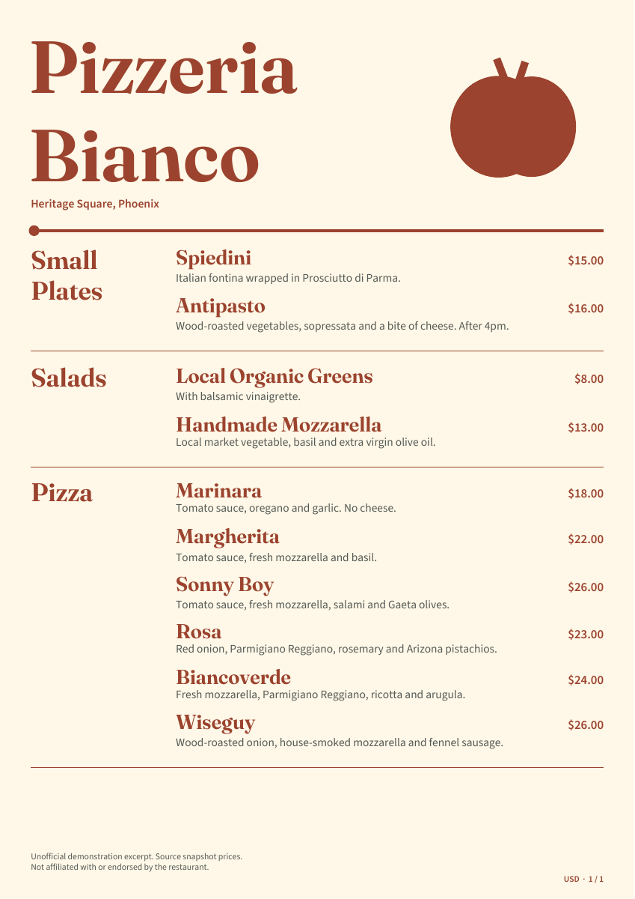
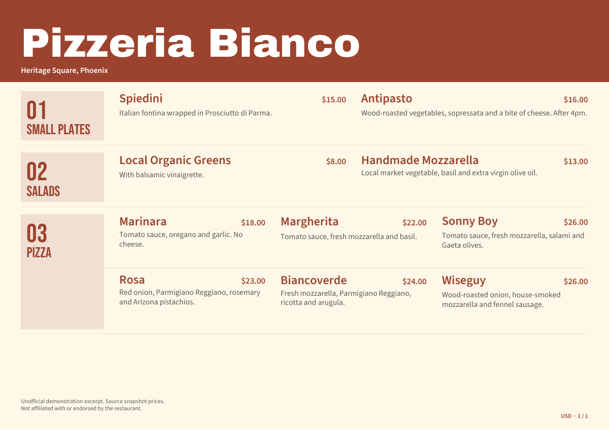
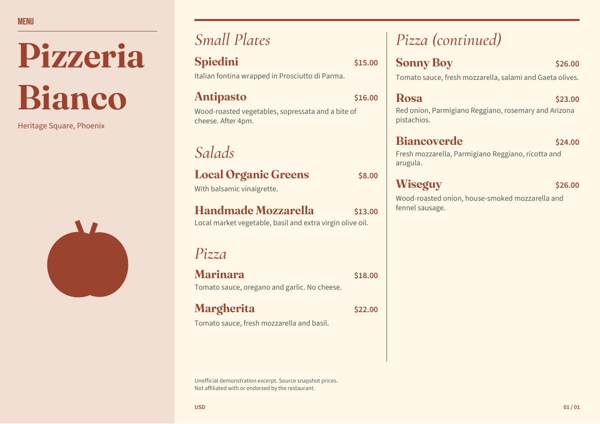

Saffron Supper Broadsheet
An indexed category rail and adaptive dish grid.
Three real restaurant excerpts, interpreted from three different design briefs. These are actual selectable PDFs created by the studio's local design engine. Open a PDF to inspect every page, or restore its editable backup in the studio. No AI call or image generation is used.
A Bombay supper room. Dark navy, saffron accents, bold modern landscape. No illustration.

An indexed category rail and adaptive dish grid.

An identity island beside two flowing menu columns.
Unofficial demo excerpt, not endorsed by Dishoom. Names and prices follow the official all-day menu retrieved on this date. Descriptions are condensed paraphrases. The three excerpt categories are editorial selections. Prices exclude the optional 12.5% service charge. Dietary labels reproduce the source and do not guarantee absence of allergens. Unofficial design studies. No restaurant affiliation or endorsement.
A Parisian neighbourhood brasserie. Cream paper, burgundy ink, quiet editorial portrait. No illustration.

A typographic masthead with aligned names, descriptions and prices.

A generous illustrated masthead and independent category lanes.
Unofficial demo excerpt, not endorsed by Balthazar. Names and prices follow the official dinner menu retrieved on this date. Ingredient descriptions are condensed paraphrases. Prices and availability may change. No dietary or allergen claims are inferred. Unofficial design studies. No restaurant affiliation or endorsement.
A Phoenix neighbourhood pizzeria. Warm cream paper, terracotta ink, a produce poster with tomato illustration.

A generous illustrated masthead and independent category lanes.

An indexed category rail and adaptive dish grid.

An identity island beside two flowing menu columns.
Unofficial demo excerpt, not endorsed by Pizzeria Bianco. This PDF was linked from the official Heritage Square page on the access date. Its filename identifies an April 2023 menu, so these are documented snapshot prices rather than a promise of current prices. Descriptions are condensed paraphrases. Antipasto is served after 4pm. No dietary or allergen claims are inferred. Unofficial design studies. No restaurant affiliation or endorsement.